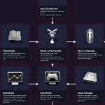
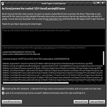
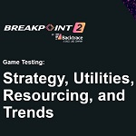

Presentations
Maximizing Your Game's Performance in Unreal Engine
Everyone on the team should be able to gauge the performance impact of their work. Join Unreal Engine Evangelist Ari as he uses the new built-in tools of Unreal Engine 5 to find nasty performance traps and bugs he maliciously planted in his demo project before the presentation.
New Features of Insights: Unreal Engine’s Built In Profiling Tools
Ari joins JB and Catalin from the Insights team to show off some new and upcoming features of Unreal Insights, along with presenting two more memory related practical profiling scenarios like he showed in his previous presentation "Maximizing Your Game's Performance in Unreal Engine".
Lessons Learned from a Year of UE4 AAA Development
Join Ari as he recounts the pitfalls, tips and tricks learned during Housemarque's first year of using Unreal Engine 4 for their biggest game yet.
Begin Play | Programming

While it may seem intimidating at first, it’s not that hard to get started with programming in Unreal Engine. It’s a long journey to become an experienced programmer, but obtaining some general knowledge will help you obtain better control over the engine.
Unreal Engine 5: A Closer Look
Nanite! Lumen! And there’s so much more. Join Unreal Engine evangelist Ari Arnbjörnsson as he showcases many of Unreal Engine 5’s new features.
Crashing With Style in Unreal Engine

A build without symbols is a doomed build. A game without crash reporting will stay broken. Join Ari as he tries to break the record of live crashes in a single presentation to teach you how to get the most out of your Unreal game crashes.
The Many Industries of Unreal Engine
Join Ari as he dives into the different industries using Unreal Engine and how knowing the tech can help you advance your career.
From Zero to Lead
14 years is a long time to make mistakes. Ari goes over his lessons learned in various leadership roles throughout his career.
UE4 Modules
Modules are the foundational building blocks of Unreal Engine and everyone using C++ should be using them, but much about them is shrouded in mystery. Come with me as I expose everything about building and using Modules along with relevant topics like Precompiled Headers, Include What You Use, Module Logging and more!
Unreal Engine Challenge Code Review - Shmup
Ari leads a panel with three other leads from companies using Unreal Engine who take turns publicly reviewing code projects as if they were applying at game companies. By demystifying the coding test part of job interviews, the panelists hope to show what hiring leads are looking for when hiring and how applicants can improve their chances of getting a job.
In this challenge, applicants were tasked with creating a Shoot-Em-Up (Shmup) game.
Unreal Engine Challenge Code Review - Space Invaders
Ari leads a panel with two other leads from Sony studios using Unreal Engine who take turns publicly reviewing code projects as if they were applying at game companies. By demystifying the coding test part of job interviews, the panelists hope to show what hiring leads are looking for when hiring and how applicants can improve their chances of getting a job.
In this challenge, applicants were tasked with creating a Space Invaders game.
MegaGrants: How to Stand Out | Inside Unreal
A MegaGrant can be a great way to get your project off the ground, or even take it to the next level. But what does Epic look for in our applicants? And how do you maximize your MegaGrant after you get it? In this Inside Unreal, we talk to the creators of Wholesome - Out and About, BattleJuice Alchemist, and RIFT about their journeys, as well as the process of making games and animated films with Unreal Engine.
Game Testing: Strategy, Utilities, Resourcing, and Trends

This panel will cover several facets of game testing. We will cover how real-world games approach the strategy and resourcing of game testing. We will also discuss how the game itself and game development lifecycle plays into the overall testing strategy. Afterwards we’ll look at trends in the industry from game makers and vendors on how they look to evolve the state of game testing.
Failing Fast and Often: A Crash Course in Mobile App Health
Unreal Engine from Epic Games is a massively popular game development framework that has provided the foundation to build some of the most popular video games in recent memory. The platform has made it easy for game studios to create rich, in-depth games that meet gamers’ increasing demands for out-of-this-world experiences without interruption. But crashes can still occur, and errors left unresolved can affect user retention and, ultimately, revenue loss. How can developers not only solve, but learn from these errors to prevent similar crashes in the future?
Join us as we invite Ari Arnbjörnsson, Unreal Engine Evangelist at Epic Games, for a fireside chat with Bugsnag to discuss implementing, measuring, and improving mobile game health and performance.
Epic Games and Unreal Engine in 2022
Epic Games Evangelist Ari Arnbjörnsson gives a presentation about the new things that happened with Epic Games and Unreal Engine in 2022.
AAA Digital Humans in Unreal Engine - Meet the Metahumans
Bringing compelling real-time digital humans to life is incredibly challenging and time-consuming. It can take months of research, costly scanning equipment, and an army of tech artists. But what if we could make the process radically simpler, faster, and more scalable — without compromising on quality? What if creating characters for your game would be as easy as you creating a character while playing a game? In this talk Unreal Engine Evangelist Ari Arnbjörnsson shows how to get started with the cutting edge digital humans from Epic Games with Unreal MetaHuman Creator and its integration in Unreal Engine. Come meet the MetaHumans!
Unreal Engine in 2021: MetaHumans, Quixel, and Beyond
What's beyond the engine? Find out as we explore the rest of the Epic Games ecosystem. Join Ari Arnbjörnsson for a guided tour of Epic Online Services, Quixel Megascans, MetaHuman Creator, and RAD Games tools, and see how they might apply to your own workflow.
Delivering Assets to Your Mobile Game
This talk covers optimal methods for delivering assets to your users. Learn about the different strategies, pitfalls and best practices of mobile game asset delivery, covering topics such as over-the-air limits, updating your game’s data, asset caching, expansion files and user experience.